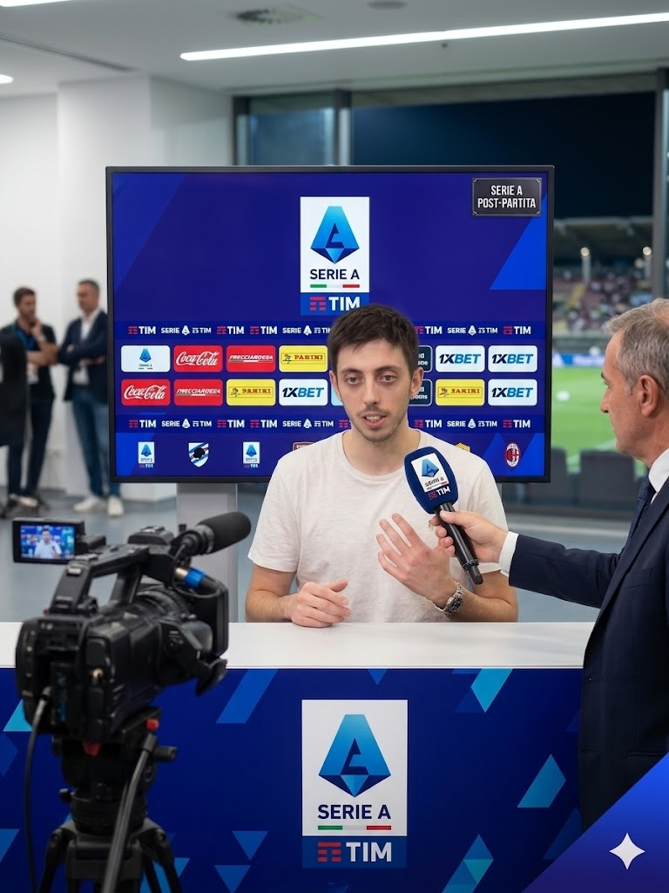

Un fulmine a ciel sereno scuote l'ambiente della Farini Champions League proprio nel momento più delicato della stagione. Le anticipazioni dell'intervista rilasciata da Minorini A., destinate a fare molto rumore nell'edizione cartacea di domani, rivelano una profonda frattura interna. E questa volta, a differenza dei bisbigli delle scorse settimane, c'è un bersaglio preciso: Giovanni Castagno.
"Sinceramente comincio ad avere qualche forte dubbio sul mio compagno Giovanni," ha spiegato Minorini ai microfoni di Farini TV, con tono severo e senza filtri. "Nel calcio moderno l'intesa e il rispetto della strategia condivisa sono tutto. Prendere un'iniziativa personale così azzardata, ignorando i movimenti concordati in allenamento proprio ad inizio campionato, è stato un errore incomprensibile. Ci è andata bene, ma la fortuna non dura per sempre."
Le dichiarazioni pesanti del giocatore del REAL MADRINK aprono ora un caso spinoso sulla gestione dello spogliatoio e sull'affidabilità di Castagno in vista delle prossime battaglie. "Mi chiedo se abbia la lucidità necessaria in questa fase," ha concluso Minorini. "Per vincere la coppa serve un'altra testa. Certe leggerezze, da oggi in poi, non saranno più tollerate."